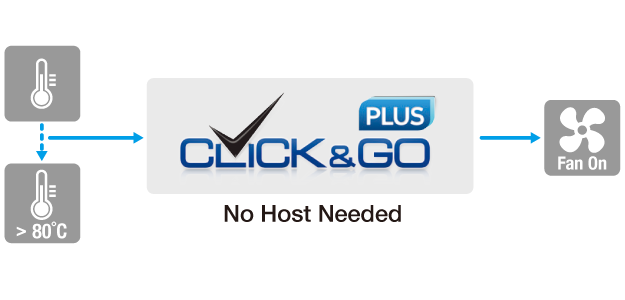
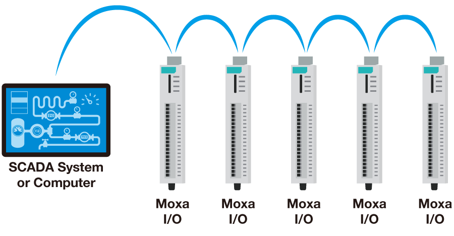
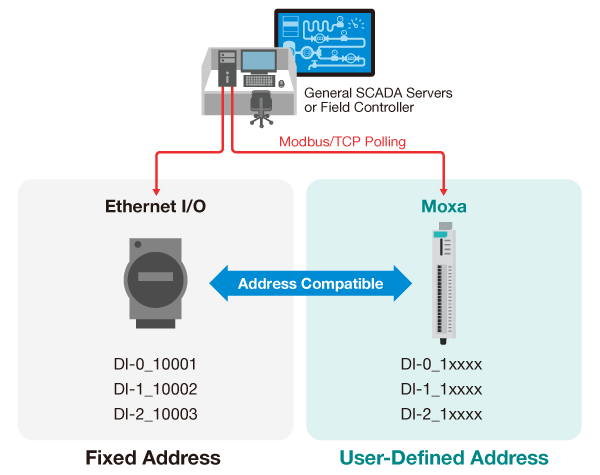
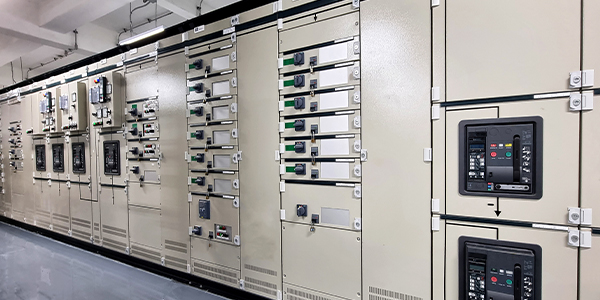

Event-driven push technology
Instead of being polled constantly, the I/O reports only when values change. That trims traffic, accelerates system response, and frees host resources for higher-level applications and real-time analysis.

Remote I/O Portfolio
Smart, reliable I/O for effortless integration—proactive data push, quick installation, and industrial-grade endurance for real-time field visibility.

Overview
Modern operations run on real-time field data. Moxa Remote I/O delivers it with proactive intelligence, simple deployment and setup, and industrial-grade reliability—stable connectivity and live data access for smarter decisions at every level of your system.
See why engineers choose MoxaWhy Moxa
Choose a design pillar to review the engineering decisions behind it and the series that support each capability.
Instead of being polled constantly, the I/O reports only when values change. That trims traffic, accelerates system response, and frees host resources for higher-level applications and real-time analysis.
Configure if-then-else rules in a graphical interface and let the device execute event-based actions at the edge. Devices react immediately while overall host dependency drops.

Direct terminal access from the front makes wiring faster and cleaner while saving DIN-rail installation space in compact control panels.

Two built-in LAN ports let devices connect in a daisy chain without an external switch—simplifying architecture, cabling, installation time, and cost.

Adjustable Modbus addressing helps the device fit existing systems without reworking configurations, reducing downtime and simplifying integration with legacy equipment.

Long-term product support and engineering confidence for critical deployments.
Stable field operation across extreme heat and cold.
Improved common-mode voltage range for robust serial communication.
Product Portfolio
Four series cover smart, Ethernet, serial, and modular Remote I/O. Review the essentials here, then compare engineering specifications in the selection guide.
Portfolio Brochure
Browse the supplied brochure pages in a focused viewer, or continue to the detailed selection guide below.
Applications
Turn raw field signals into actionable insight across machine monitoring, distributed energy, infrastructure, and transportation systems.

Retrofit legacy machines with live status and alarm reporting—without PLC rework.
Monitor distributed assets across substations, solar, and storage sites.
Keep water, tunnels, and utilities observable with hardened, always-on I/O.

Track wayside and station equipment across rail, road, and ITS deployments.
Selection Guide
The first column stays visible as you review specifications. Highlight meaningful differences or print the guide for your design review.